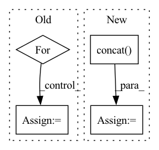

Pattern ID :31784
Before Change
ww_split = [0, -window_width, -shift_width, None]
mask = tf.zeros([height, width]).numpy() // need to assign values
mask_value = 0 // value is ignored
for hh_start, hh_end in zip(hh_split[:-1], hh_split[1:]):
for ww_start, ww_end in zip(ww_split[:-1], ww_split[1:]):
mask[hh_start:hh_end, ww_start:ww_end] = mask_value
mask_value += 1
mask = tf.convert_to_tensor(mask)
// return maskAfter Change
rr = [tf.zeros([hh, ww_split[id + 1] - ww_split[id]]) + (id + mask_value) for id in range(total_ww)]
mask.append(tf.concat(rr, axis=-1))
mask_value += total_ww
mask = tf.concat( mask, axis=0)
// return mask
mask = tf.reshape(mask, [height // window_height, window_height, width // window_width, window_width])
mask = tf.transpose(mask, [0, 2, 1, 3])In pattern: SUPERPATTERN
Frequency: 3
Non-data size: 4
Instances Fragment ID: 92817384
Project Name: leondgarse/keras_cv_attention_models
Commit Name: bcd22fc3dc9889d71afdf773b78b74d3211754be
Time: 2022-04-06
Author: leondgarse@gmail.com
File Name: keras_cv_attention_models/swin_transformer_v2/swin_transformer_v2.py
M Class Name: AnonimousClass
N Class Name: AnonimousClass
M Method Name: make_window_attention_mask(6)
N Method Name: make_window_attention_mask(6)
M Parent Class:
N Parent Class:
M File Name: keras_cv_attention_models/swin_transformer_v2/swin_transformer_v2.py
N File Name: keras_cv_attention_models/swin_transformer_v2/swin_transformer_v2.py
M Start Line: 111
M End Line: 119
N Start Line: 110
N End Line: 118
Before Change
mask = tf.zeros([height, width]).numpy() // need to assign values
mask_value = 0 // value is ignored
for hh_start, hh_end in zip(hh_split[:-1], hh_split[1:]):
for ww_start, ww_end in zip(ww_split[:-1], ww_split[1:]):
mask[hh_start:hh_end, ww_start:ww_end] = mask_value
mask_value += 1
mask = tf.convert_to_tensor(mask)
// return mask
After Change
rr = [tf.zeros([hh, ww_split[id + 1] - ww_split[id]]) + (id + mask_value) for id in range(total_ww)]
mask.append(tf.concat(rr, axis=-1))
mask_value += total_ww
mask = tf.concat( mask, axis=0)
// return mask
mask = tf.reshape(mask, [height // window_height, window_height, width // window_width, window_width])
mask = tf.transpose(mask, [0, 2, 1, 3]) Fragment ID: 92817385
Project Name: leondgarse/keras_cv_attention_models
Commit Name: bcd22fc3dc9889d71afdf773b78b74d3211754be
Time: 2022-04-06
Author: leondgarse@gmail.com
File Name: keras_cv_attention_models/swin_transformer_v2/swin_transformer_v2.py
M Class Name: AnonimousClass
N Class Name: AnonimousClass
M Method Name: make_window_attention_mask(6)
N Method Name: make_window_attention_mask(6)
M Parent Class:
N Parent Class:
M File Name: keras_cv_attention_models/swin_transformer_v2/swin_transformer_v2.py
N File Name: keras_cv_attention_models/swin_transformer_v2/swin_transformer_v2.py
M Start Line: 111
M End Line: 119
N Start Line: 110
N End Line: 118
Before Change
val_pvars = []
inputs = self.raw_time_series[:, 0, :].clone().unsqueeze(1).to(self.model.device)
for _ in range(100):
val_x_pred = self.model.get_prediction_trace(inputs)
pvar = PVarianceLoss()(val_x_pred, self.raw_time_series.to(val_x_pred.device))
val_pvars.append(to_numpy(pvar).item())
print(f"Validation PVariance: {np.mean(val_pvars):.3f}")After Change
self.eprop.on_batch_begin(self)
inputs = self.true_time_series[:, 0, :].clone().unsqueeze(1).to(self.model.device)
x_pred = self.model.get_prediction_trace(inputs)
x_pred = torch.concat( [inputs, x_pred], dim=1)
self.current_training_state = self.current_training_state.update(pred_batch=x_pred)
self.eprop.on_batch_end(self)
self.eprop.on_train_end(self)
Fragment ID: 92817389
Project Name: neurotorch/neurotorch
Commit Name: 9ba260c32491b2e046fbd60f8599ede10b9e6273
Time: 2023-02-01
Author: 93488840+AnthoDrouin@users.noreply.github.com
File Name: src/neurotorch/learning_algorithms/debug_e_prop_v5.py
M Class Name: SimplifiedEpropFinal
N Class Name: SimplifiedEpropFinal
M Method Name: train(4)
N Method Name: train(4)
M Parent Class:
N Parent Class:
M File Name: src/neurotorch/learning_algorithms/debug_e_prop_v5.py
N File Name: src/neurotorch/learning_algorithms/debug_e_prop_v5.py
M Start Line: 116
M End Line: 145
N Start Line: 126
N End Line: 146
Before Change
df_train = {}
df_val = {}
if local_split:
for key in df_dict:
df_train[key], df_val[key] = _split_df(df_dict[key], n_lags, n_forecasts, valid_p, inputs_overbleed)
else:
if len(df_dict) == 1:
for df_name, df_i in df_dict.items():After Change
if local_split:
for df_name, df_i in df.groupby("ID"):
df_t, df_v = _split_df(df_i, n_lags, n_forecasts, valid_p, inputs_overbleed)
df_train = pd.concat( (df_train, df_t.copy(deep=True)), ignore_index=True)
df_val = pd.concat((df_val, df_v.copy(deep=True)), ignore_index=True)
else:
if len(df["ID"].unique()) == 1:
for df_name, df_i in df.groupby("ID"): Fragment ID: 92817391
Project Name: ourownstory/neural_prophet
Commit Name: 7fcf23557cb5b30885a8a07387d411c61a50a05e
Time: 2022-06-21
Author: mgheorghecr@gmail.com
File Name: neuralprophet/df_utils.py
M Class Name: AnonimousClass
N Class Name: AnonimousClass
M Method Name: split_df(6)
N Method Name: split_df(6)
M Parent Class:
N Parent Class:
M File Name: neuralprophet/df_utils.py
N File Name: neuralprophet/df_utils.py
M Start Line: 924
M End Line: 949
N Start Line: 913
N End Line: 930